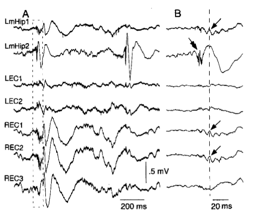
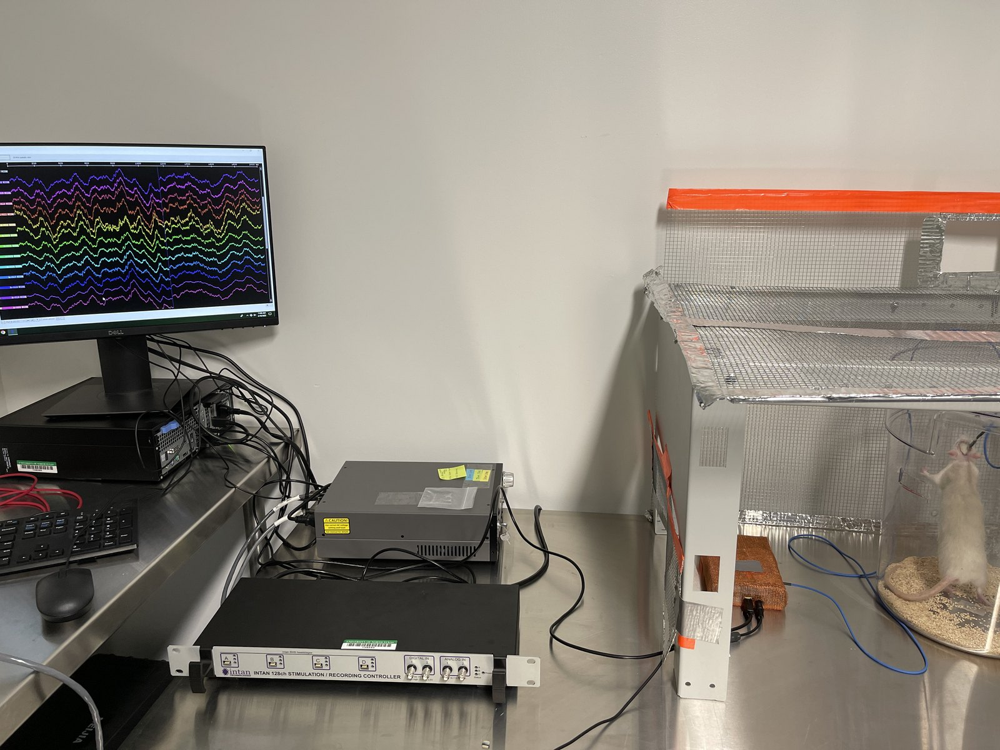

Research
Epileptogenesis is the sequence of events that converts a normal neuronal network into a hyperexcitable network with increased seizure susceptibility.
Project 1 · Biomarkers of epilepsy

Pathological high-frequency oscillations are transient fast oscillations observed in local field potentials near seizure-generating regions. We analyze ripples and fast ripples, compute pHFO-based networks, and evaluate global and local network properties as predictors of epileptogenesis.
- Intrahippocampal kainic acid model of mesial temporal lobe epilepsy.
- Grid electrodes and silicon probes for local field potential recording.
- Graph-theoretical analysis and machine-learning prediction.
- Collaborations with UCLA epilepsy researchers.
Project 2 · Epilepsy prevention

We study photobiomodulation as a candidate antiepileptogenesis therapy, measuring neural activity and intracellular responses in brain slices and preclinical epilepsy models.
- CCO and ROS measurement with immunohistochemistry and immunofluorescence.
- MEA recording of spikes and LFPs during baseline and acute seizure models.
- Testing selected wavelengths for reducing epileptiform discharges, pHFOs, and seizure severity.
Experimental and computational platforms

